兩束光相遇
物光與參考光在感光材料上重疊，形成干涉。
Holography Laboratory · FCU Photonics
從全像光學元件到全像微影，探索如何記錄、重建並運用光，讓光學設計走出理論，成為看得見、量得到的元件。
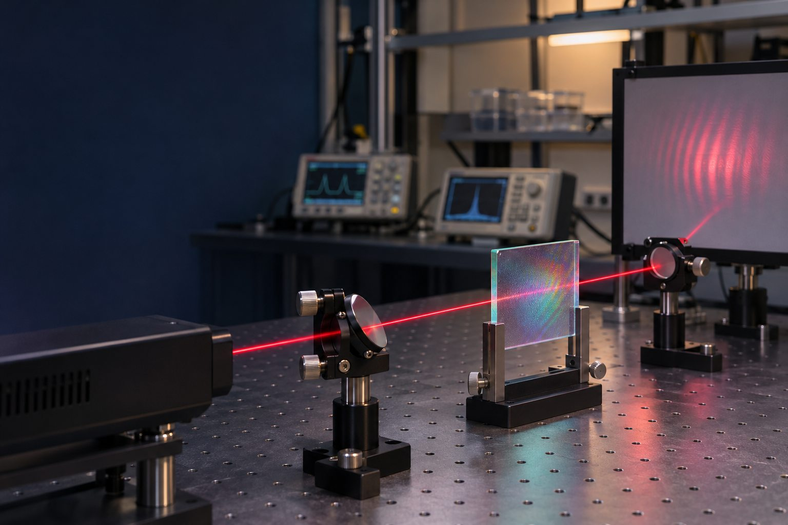
AI 生成示意圖About the lab
全像利用光的干涉與繞射來記錄、重建光場資訊。全像實驗室從元件設計與製作出發，研究如何控制光的方向、偏振與傳播特性。
研究結合光學、材料、微細製程與量測。從雷射記錄系統，到干涉量測與 3D 列印，團隊透過實驗把想法變成元件，再用數據確認它如何工作。
網站先以入門方式介紹實驗室的近期方向與過往研究；細節仍以論文和實驗結果為準。
Holography in 3 steps
先把光記錄成材料中的微細條紋，再利用繞射重新整理光波。可以把它想成：記下光的線索，之後再用光讀出來。
物光與參考光在感光材料上重疊，形成干涉。
干涉圖樣保存光場資訊，成為全像元件的微細結構。
照明光經全像結構繞射，形成預先設計的光束或波前。
簡化原理示意。實際記錄與重建方式會依全像元件設計而異。
Research
研究方向會隨問題與技術演進。以下先用幾個主題，帶您快速認識實驗室正在探索與曾經投入的工作。
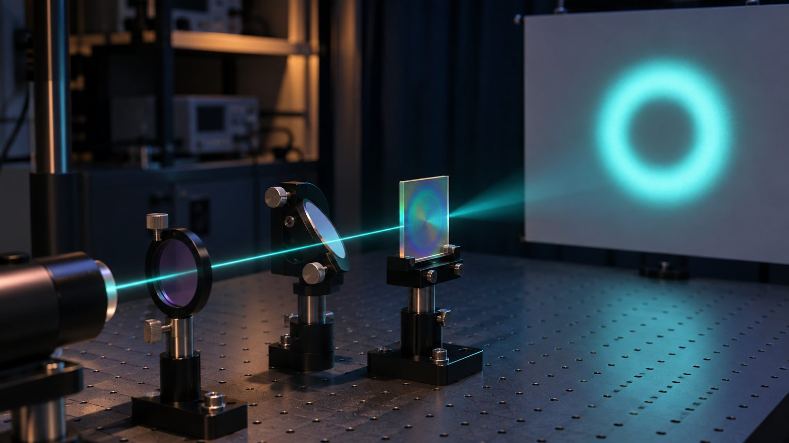
設計與製作能調控光線的全像元件，例如體積全像片與偏振轉換元件，探索全像在光束控制和光學系統中的應用。
AI 生成研究示意圖，非實驗室現場照片。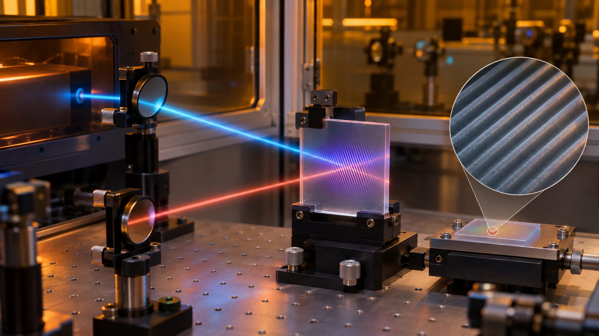
運用光的干涉形成週期性微細結構，研究光柵與光子晶體等圖樣的製作與光學特性，連結全像技術和微細製程。
AI 生成原理示意圖；設備配置以實驗室實況為準。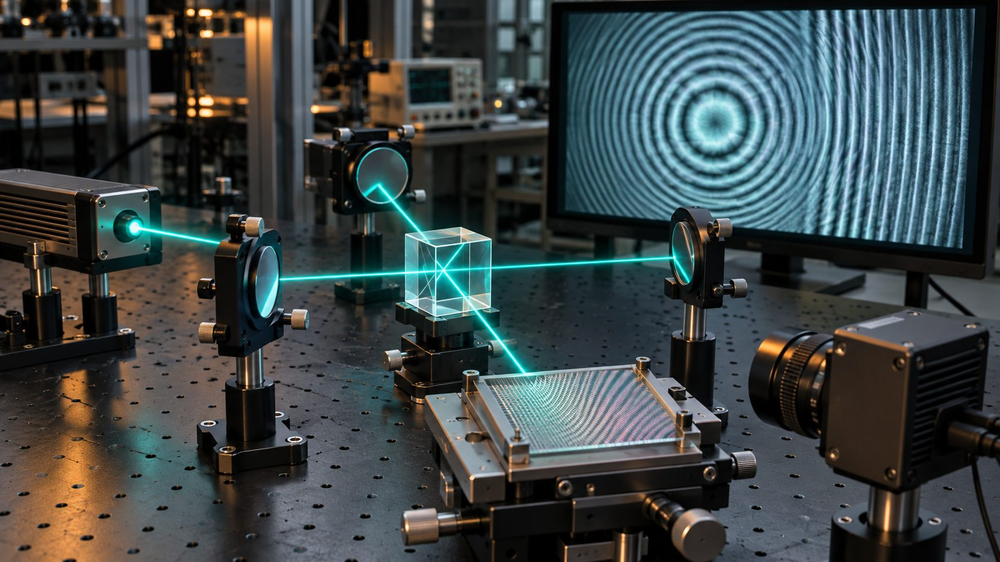
以干涉、摩爾條紋與偏振量測方法，探討位移、波長、折射率、焦距等光學參數，發展非接觸式量測的可能性。
AI 生成光學量測示意圖，非實驗室現場照片。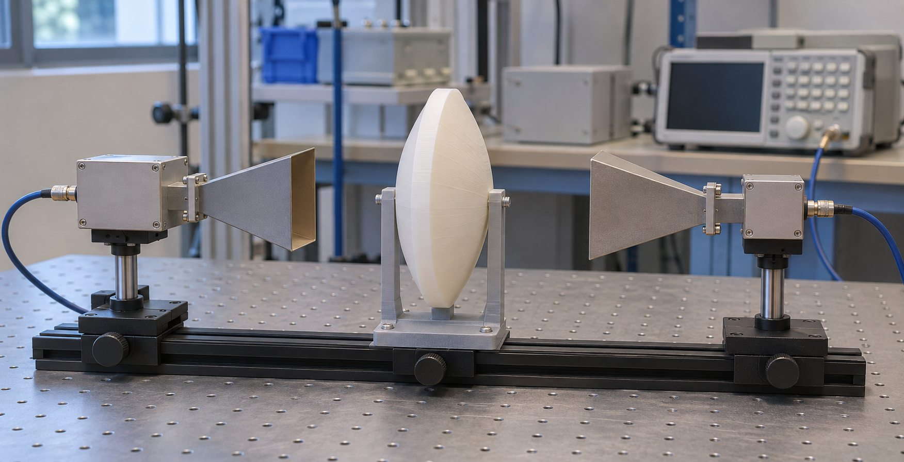
過往學生專題曾以微波進行收發器特性量測，並嘗試 3D 列印微波透鏡，呈現光學方法與增材製造跨領域應用的可能。
AI 生成專題示意圖，非實驗室現場照片。Inside the research
全像片上的繞射色彩、偏振光束圖樣與微細週期結構，讓抽象的光學概念更容易被想像。也收錄一張實驗室紀念照片，看看研究之外的日常。
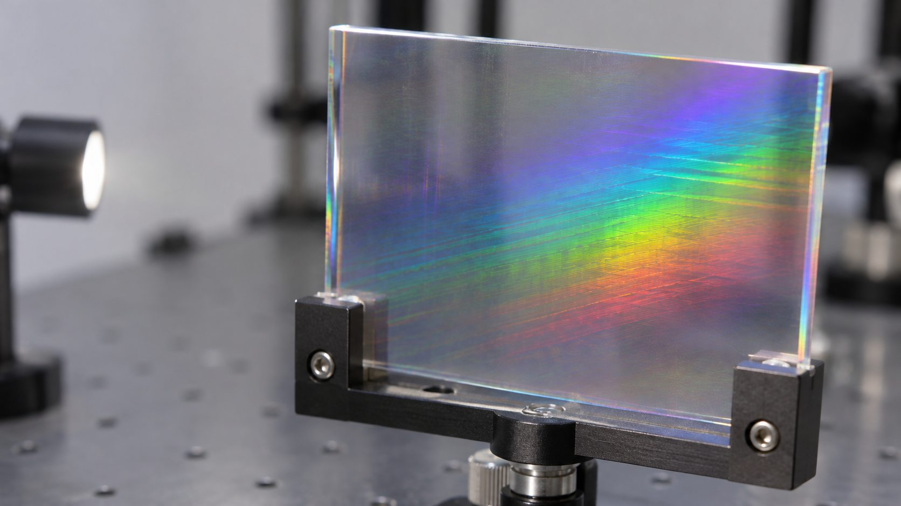
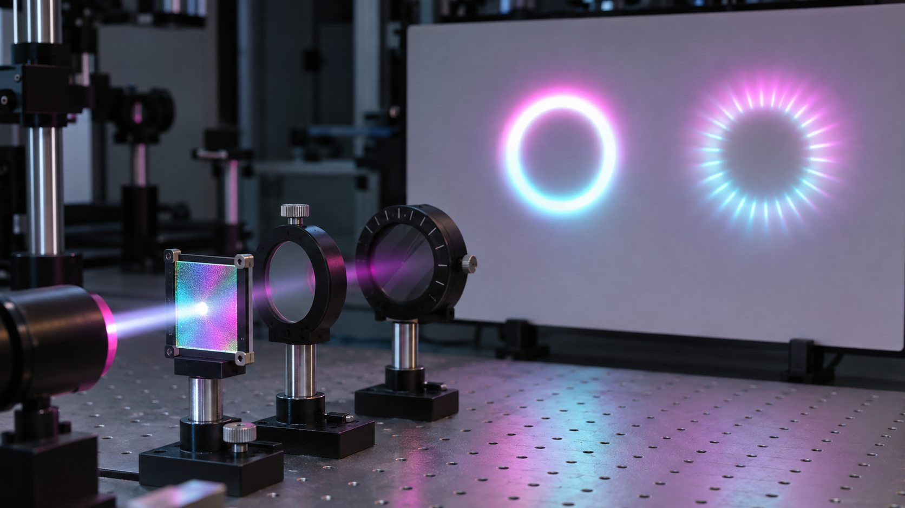
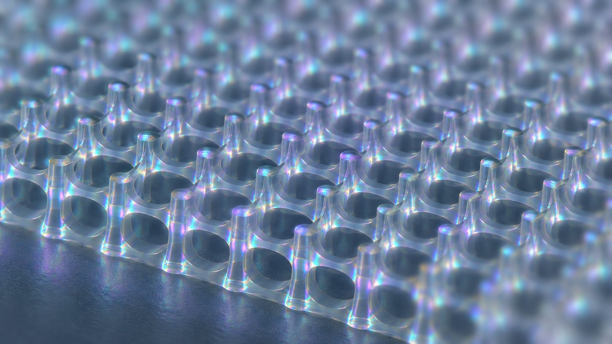
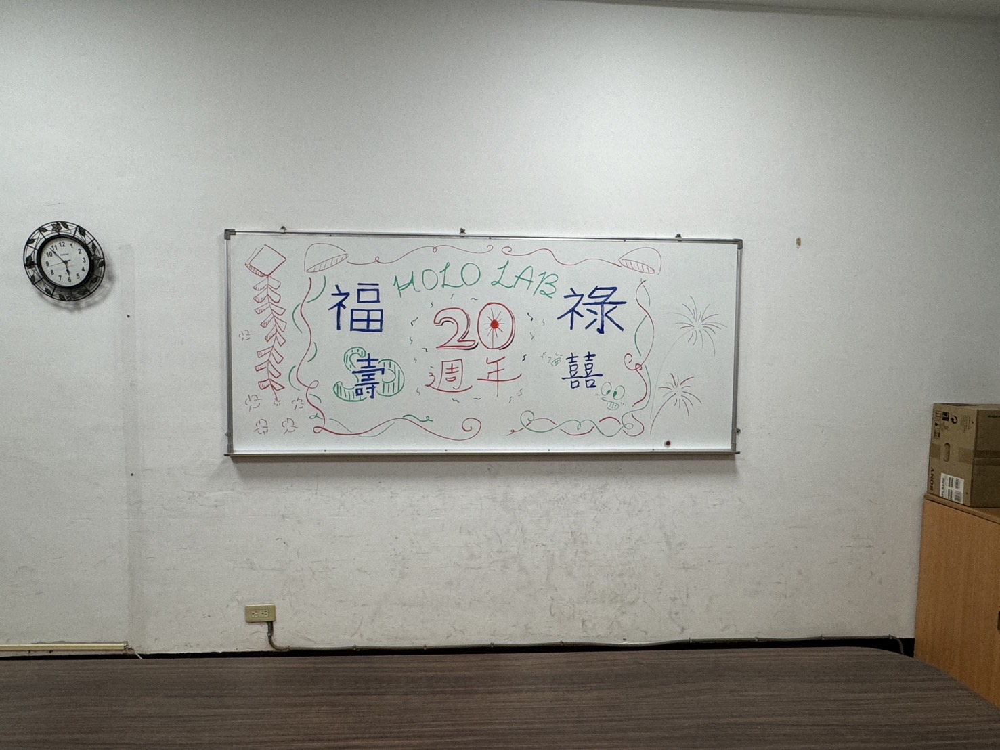
Research timeline
從早期的全像光通訊元件，到近期的光束轉換與全像微影，研究工具與應用持續拓展。
研究偏振選擇性全像元件、光學循環器及多埠光通訊元件。
延伸至徑向／方位偏振全像、表面電漿激發、光子晶體與全像光電子技術。
學生專題涵蓋微波收發器量測、3D 列印微波透鏡；實驗室介紹素材也呈現全像記錄、重建與繞射現象。
近期會議論文聚焦全像微影製作光柵／光子晶體，以及柱狀向量光束轉換元件。
Selected results
以下是資料夾中保留的偏振轉換元件專利成果海報，呈現設計原理、實作元件與測試影像。點選海報可開啟大圖。
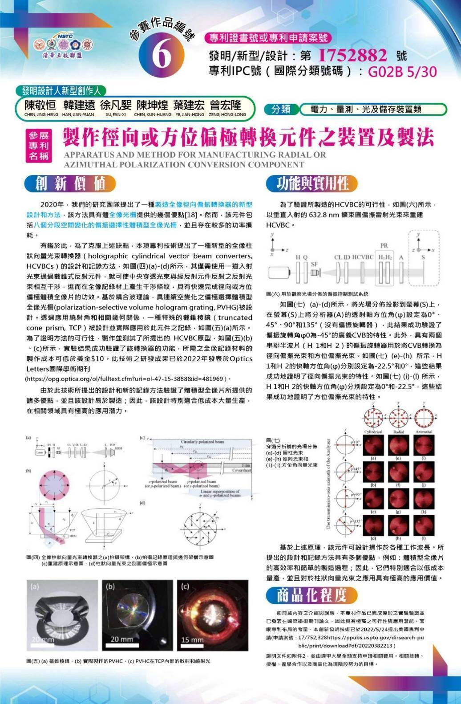
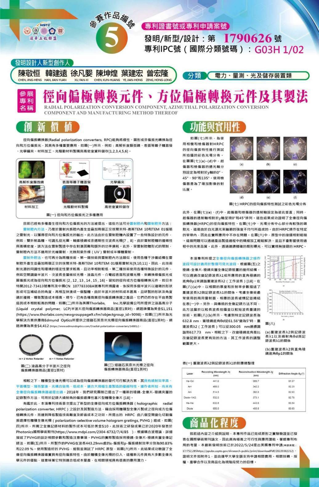
Laboratory tools
研究需要不同工具串起設計、製作與量測。資料中曾記載下列設備類型；實際型號與現況可再補充確認。
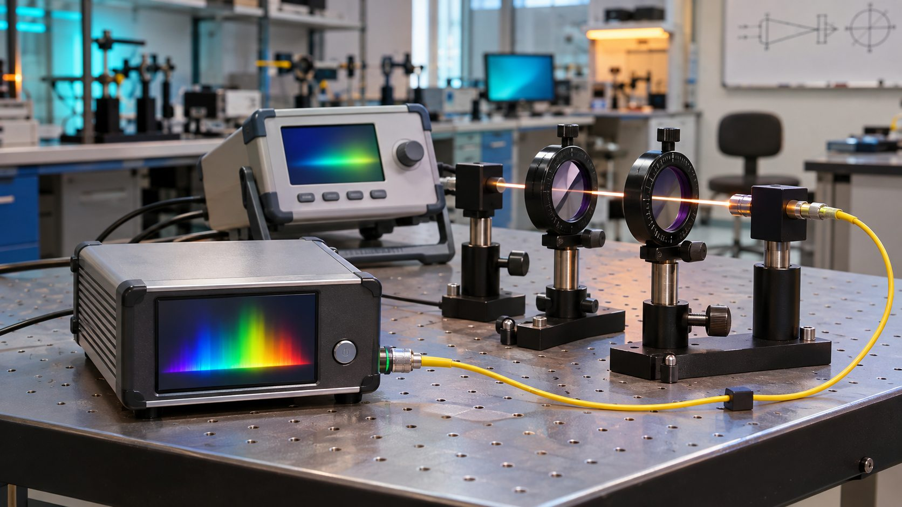
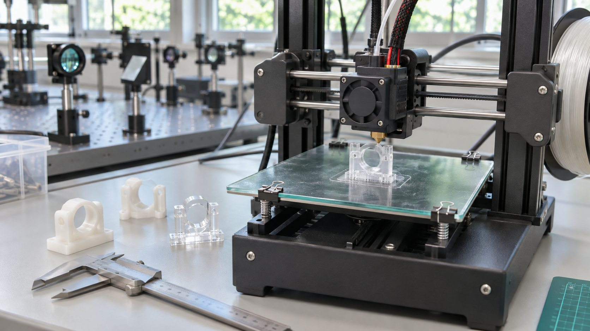
Faculty profile
依照系上師資頁常見的個人資料層次，集中呈現職稱、聯絡方式、所屬實驗室與研究方向。
全像光學元件、全像微影、光學量測，以及相關光電技術。網站內容將持續以實驗室最新研究為準。
Watch the lab
透過實驗室介紹影片，看看全像如何被記錄、重建，以及光學元件如何在實驗中工作。
影片來源：全像實驗室介紹影片。按下播放即可觀看。
影片以雷射光路說明全像記錄與重建：兩束相干光在材料上形成干涉圖樣，記錄後再以光照射，透過繞射重建光場。畫面也展示光學平台、全像展示與光柵色散。